Vloer verwijderen
Verwijderen van vloerafwerkingen en onderlagen.
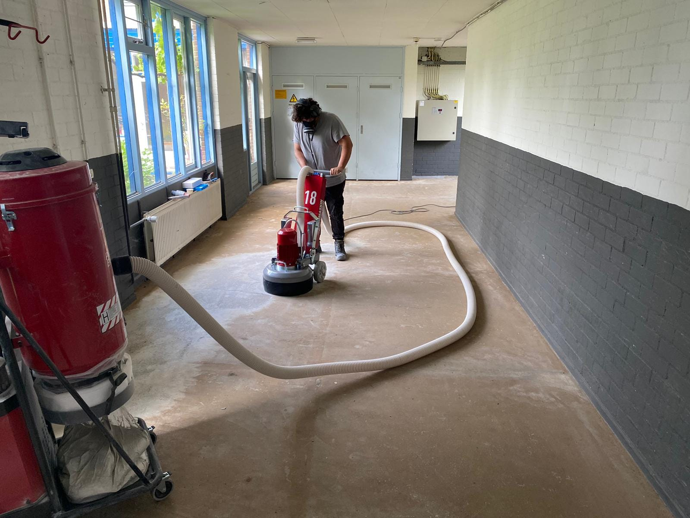
De vakman achter het werk
V/D Linden Sloop richt zich op het verwijderen van vloeren, lijmresten en sloopwerk. Zo ontstaat ruimte voor de volgende stap.
Verwijderen van vloerafwerkingen en onderlagen.
Een vloeroppervlak vrijmaken van achtergebleven lijm.
Sloopwerk als onderdeel van de voorbereiding van een ruimte.
Mogelijkheden en werkwijze worden nog bevestigd.
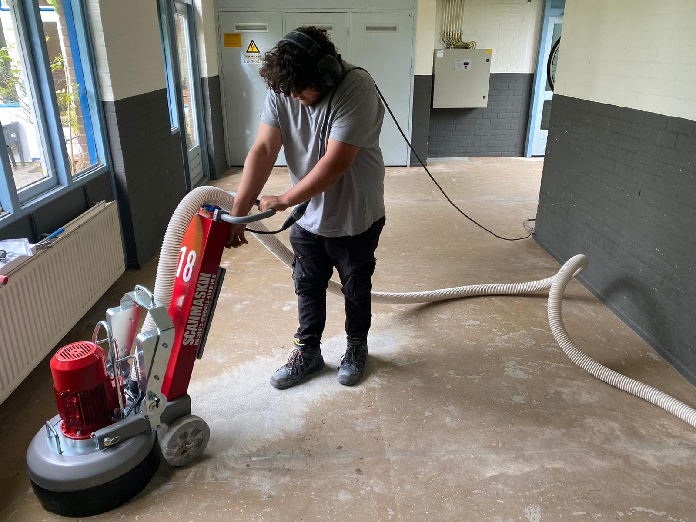
Over Antonio
Antonio is de vakman achter V/D Linden Sloop. Hij houdt zich bezig met het verwijderen van vloerafwerkingen, lijmresten en sloopwerk.
Een uitgebreider persoonlijk verhaal volgt na bevestiging van Antonio.
Meer over AntonioOns werk
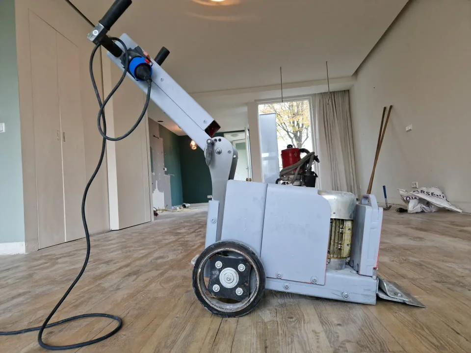
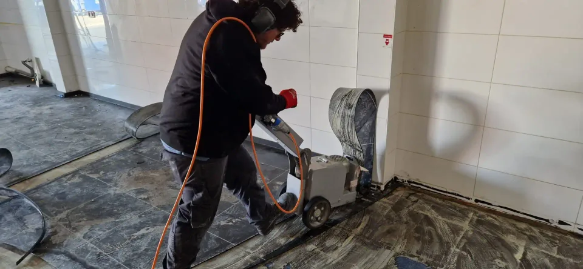
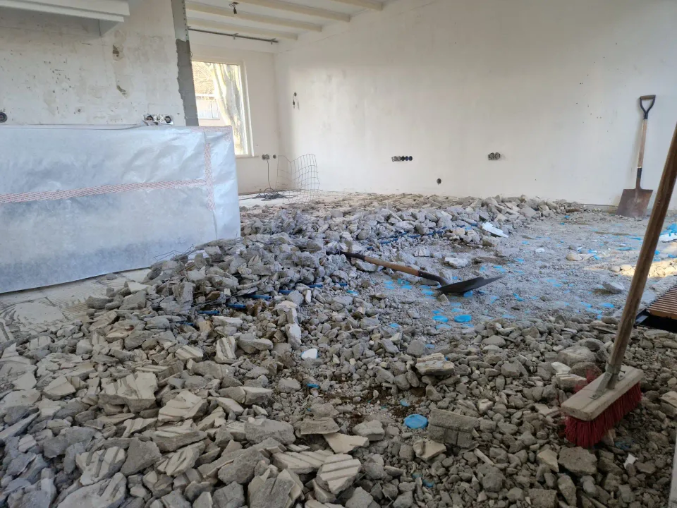
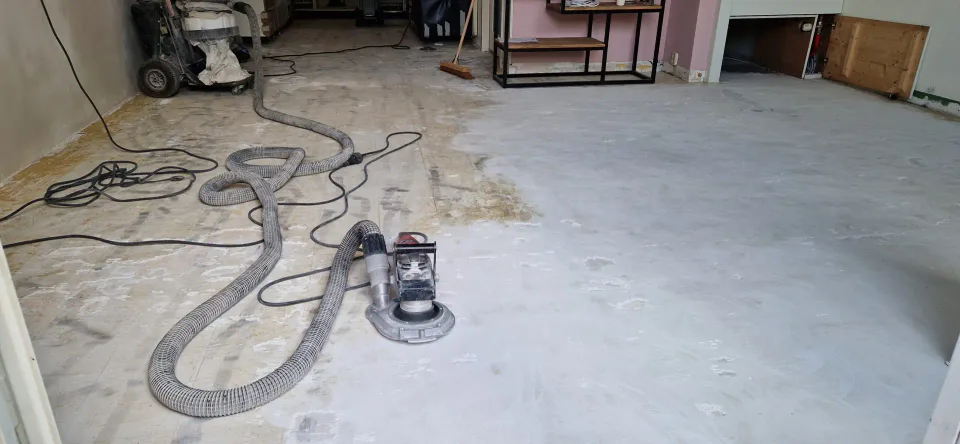
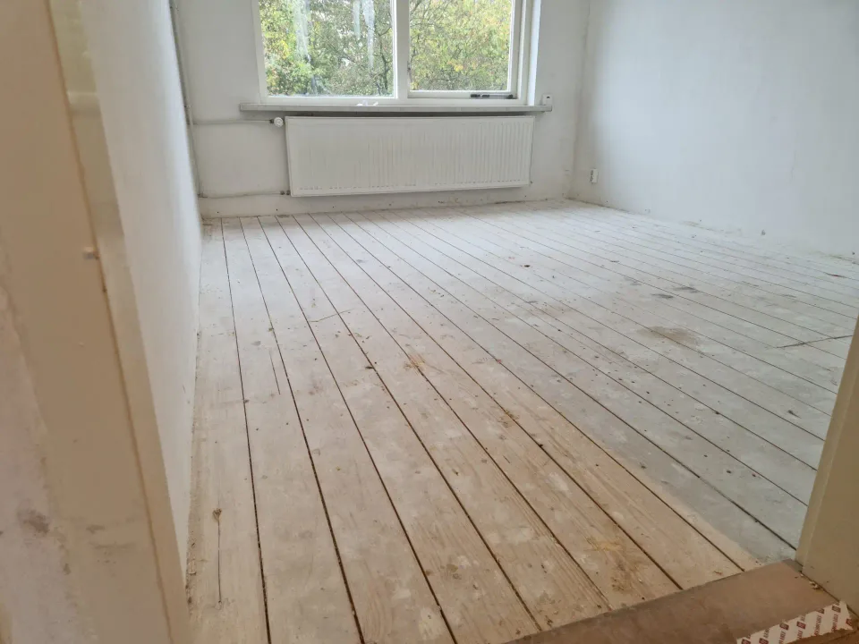
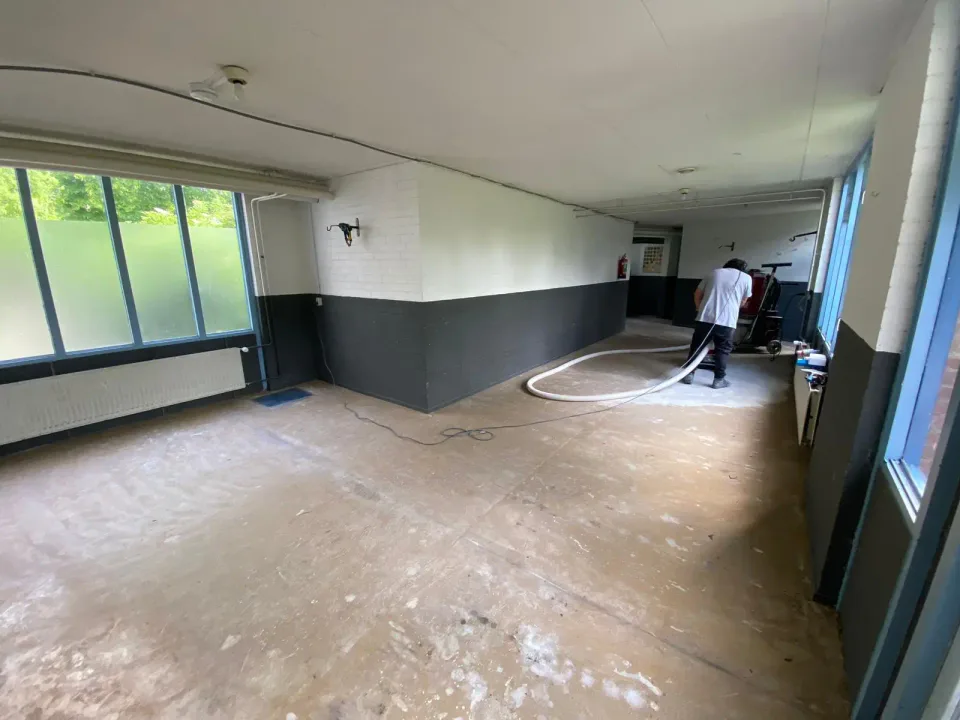
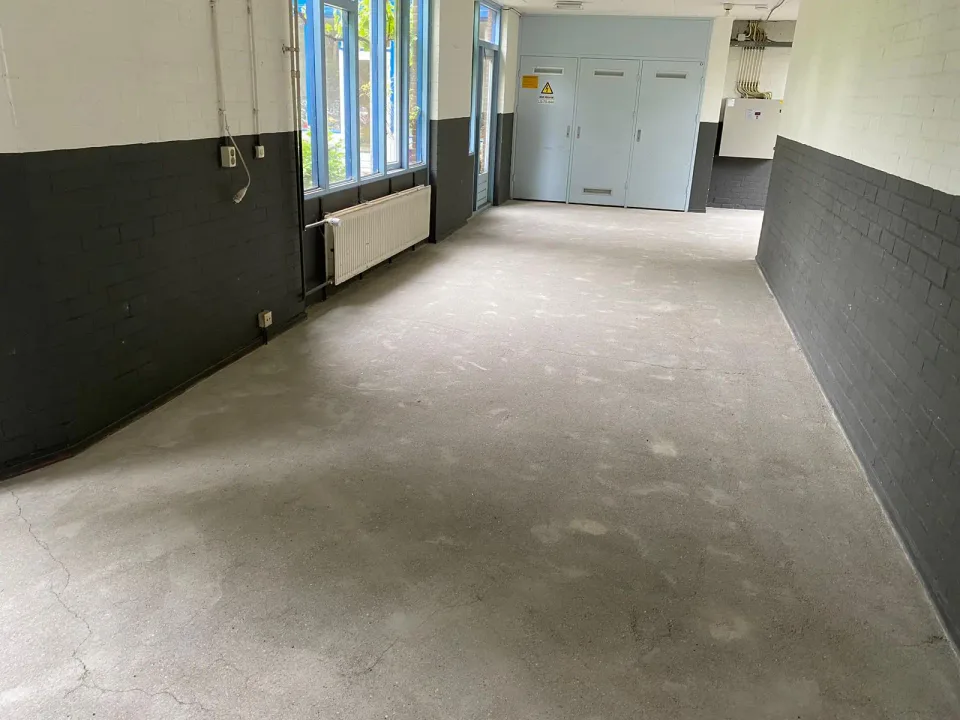
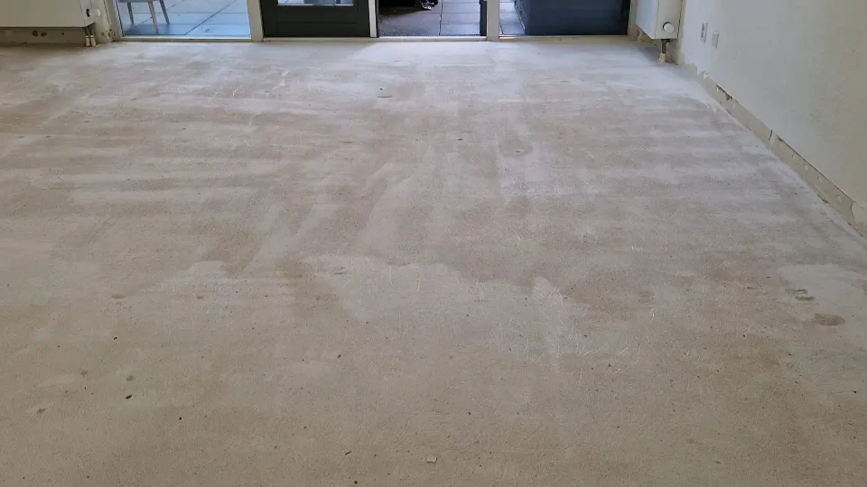
Ons werkproces
U beschrijft de ruimte en de werkzaamheden.
De werkzaamheden en planning worden besproken.
Het afgesproken vloer- of sloopwerk wordt uitgevoerd.
Eventuele afvoer wordt vooraf afgestemd.
De ruimte en de afronding worden samen bekeken.
De precieze stappen zijn afhankelijk van de opdracht en worden vooraf besproken.
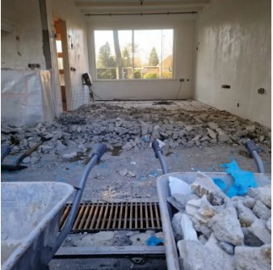
Contact
Vertel kort over de ruimte en het werk dat u wilt laten uitvoeren. Bel of mail voor een offerte.
Bel Antonio+31 6 81105719 E-mailinfo@vdlindensloop.nlDeze website is een educatief demonstratieproject over V/D Linden Sloop, de eenmanszaak van Antonio. De website is momenteel geen actief kanaal voor zakelijke aanvragen.
Het contactformulier bevat velden voor naam, e-mailadres, een optioneel telefoonnummer, onderwerp en bericht. In deze demo blijven ingevulde gegevens op deze pagina en worden ze niet verzonden. Formspree is de externe dienst voor de bewaarde verzendintegratie; deze is hier uitgeschakeld.
In de huidige websitecode zijn geen analytics of advertentietrackers opgenomen. Vragen over persoonsgegevens kunt u sturen naar info@vdlindensloop.nl.
Deze informatie is voorlopig. Voor een eventuele commerciële lancering moeten de privacyinformatie en de gegevensverwerking opnieuw worden beoordeeld en aangevuld.